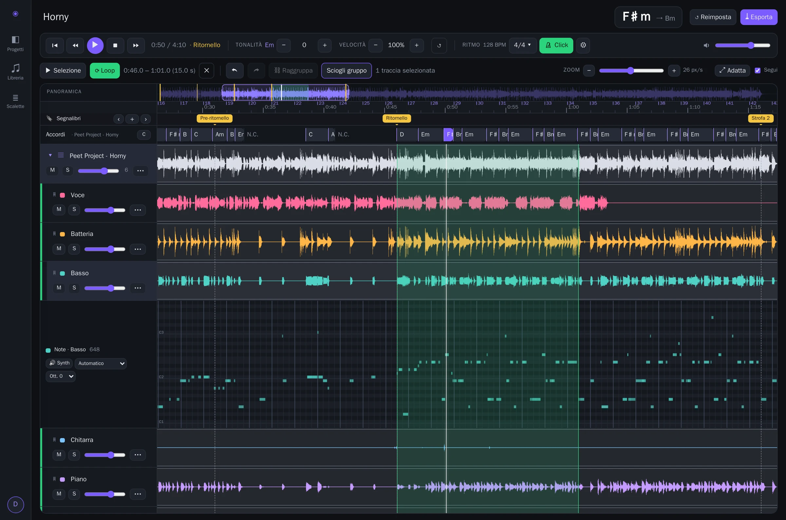
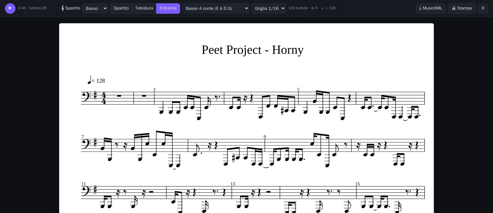

Separazione con l'AI
Demucs v4 divide il brano in voce, batteria, basso e altro, oppure in 6 tracce con chitarra e piano. Per la voce più pulita c'è Mel-Band RoFormer. Muto, solo e volume per traccia.
Noises è lo studio di pratica per musicisti che gira sul tuo server: isola voce, batteria e basso con l'AI, cambia tonalità e velocità in tempo reale, legge accordi e spartiti, ti dà un click che segue davvero la band, mette in loop i passaggi da studiare e registra la tua parte sopra il brano.

"Horny" separato in 6 tracce, con accordi, segnalibri, piano roll del basso e loop sul ritornello.
Dall'ascolto alla base per il concerto, nello stesso posto. Senza abbonamenti e senza caricare la tua musica sul cloud di qualcun altro.
Demucs v4 divide il brano in voce, batteria, basso e altro, oppure in 6 tracce con chitarra e piano. Per la voce più pulita c'è Mel-Band RoFormer. Muto, solo e volume per traccia.
±12 semitoni e 50–150% di velocità, indipendenti e applicati in tempo reale nel browser. La tonalità del brano si aggiorna mentre trasponi.
170 accordi riconosciuti con BTC, anche sul brano non separato. Accordo corrente e successivo, notazione C D E o Do Re Mi, correzione a mano.
Trascrizione automatica di ogni traccia, piano roll modificabile e synth con otto suoni per ascoltare le note, anche un'ottava sopra.
MusicXML per pianoforte, batteria, chitarra e basso a 4 o 5 corde, con il cursore che segue la musica. Stampa, PDF ed export.
Il metronomo che segue i colpi reali della batteria, oppure il tempo medio o un BPM fisso. Pre-conteggio che porta sempre sull'"1".
Progetti con più brani, clip da tagliare e spostare, gruppi, segnalibri, annulla e ripeti. Trascini i file dal computer o importi da YouTube.
Metti in fila i progetti della serata: alla fine di un brano parte il successivo dopo la pausa che scegli, oppure aspetta il tuo Play.
Esporta in MP3, WAV, FLAC o MIDI solo le tracce attive, per esempio tutto tranne il tuo strumento, con click e pre-conteggio inclusi.
I batteristi veri non suonano come un metronomo. Noises rileva ogni colpo di cassa e aggancia il click al momento in cui il colpo si sente davvero.
● cassa registrata ▍ click ▍ primo tempo della battuta
Seleziona il passaggio da studiare, dagli un nome e richiamalo con un clic. Il loop è già attivo e la testina all'inizio: premi Play e suona sopra, anche rallentato.
Aggiungi una traccia vuota, scegli l'ingresso e premi ⏺. Suoni sopra il brano e la registrazione finisce nella timeline, già allineata al resto.
Salva lo stato del progetto con un nome, per esempio Solo voce o Base assolo chitarra, e richiamalo con un clic. Ogni salvataggio può diventare un link pubblico da mandare alla band o da pubblicare sui social.
Ogni traccia separata diventa uno spartito: pentagramma, tablatura o entrambi. È un punto di partenza da correggere nel piano roll, non un lavoro da rifare da zero.

Trascina un file audio nella timeline o incolla un link YouTube. Il brano entra nella libreria e nel progetto.
Dal menu ⋯ della traccia scegli separazione, accordi, ritmo e note. Tutto gira sul tuo server, anche senza internet.
Rallenta, trasponi, salva il passaggio difficile come sezione e ripetilo in loop, togli il tuo strumento, accendi il click e registrati. Poi esporta la base.
Un'unica immagine Docker con modelli e librerie già dentro. Gira su un PC, su un server o su un Raspberry Pi 4/5 a 64 bit, per più utenti, ognuno con la sua libreria.
$ git clone https://github.com/teopost/noises.git $ cd noises $ make up # build + avvio $ make open # http://localhost:8080
$ git clone https://github.com/teopost/noises.git $ cd noises && cp .env.example .env # in .env: immagine pronta della CI NOISES_IMAGE=ghcr.io/teopost/noises:latest $ make pull # scarica e avvia, niente build
Requisiti: Docker con Compose v2 e make. Il motore audio del browser richiede HTTPS oppure localhost.
Un server in Rust coordina librerie di riferimento per l'audio. Il browser fa il resto: mixa, cambia tonalità e velocità e tiene il click a tempo.
Noises è distribuito con licenza MIT: usalo, modificalo, condividilo.